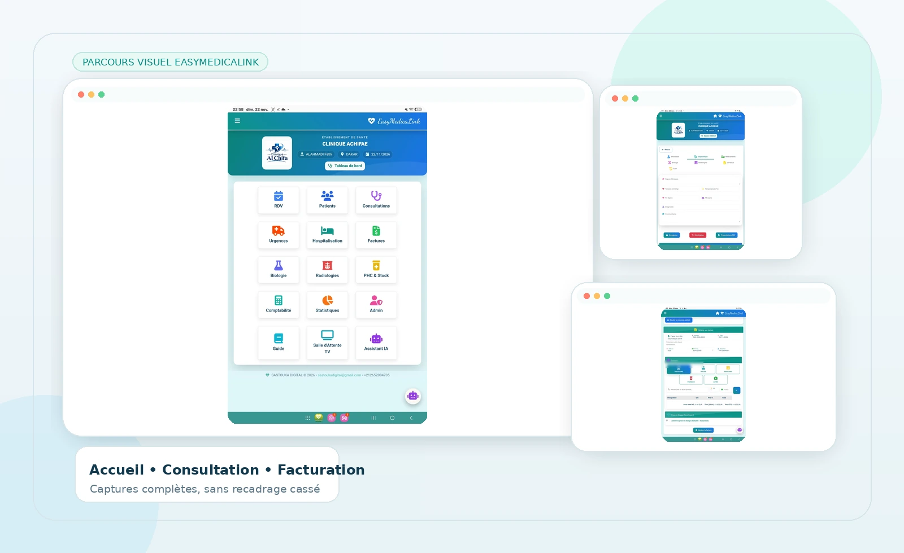
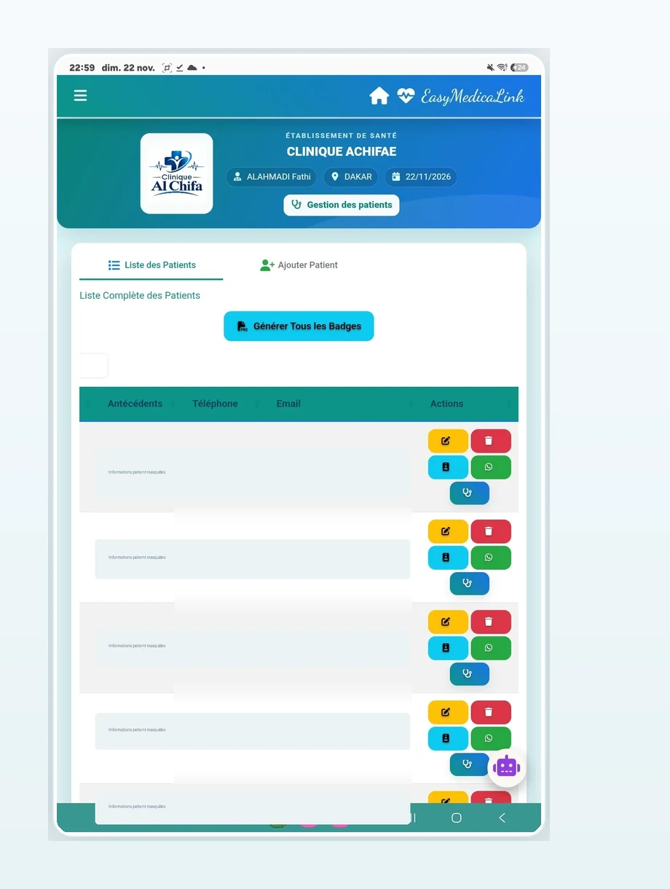
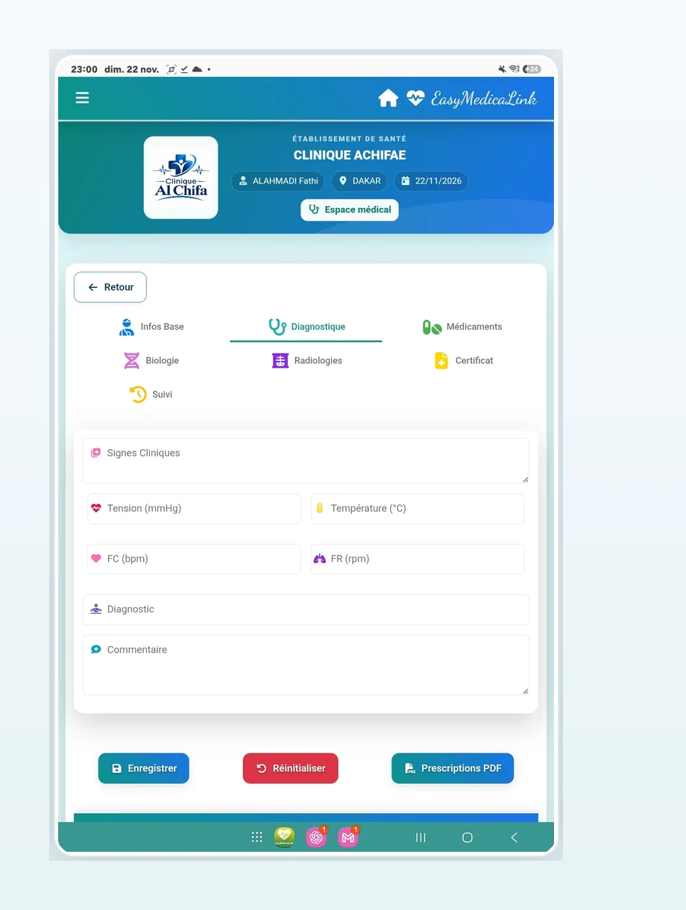
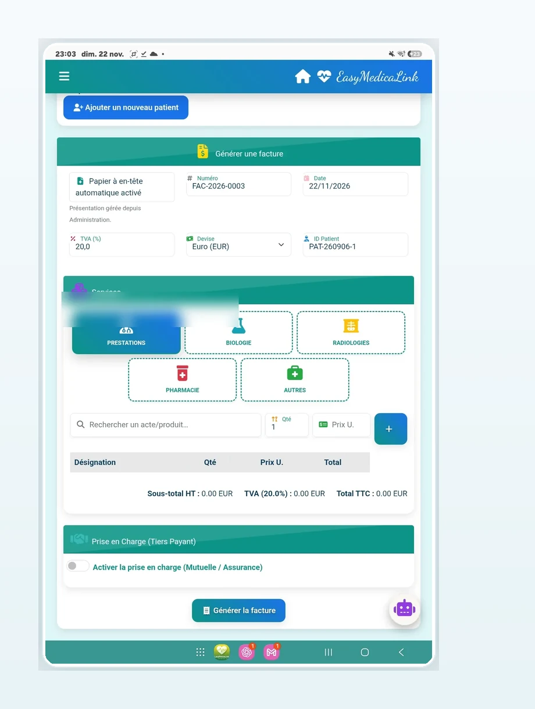
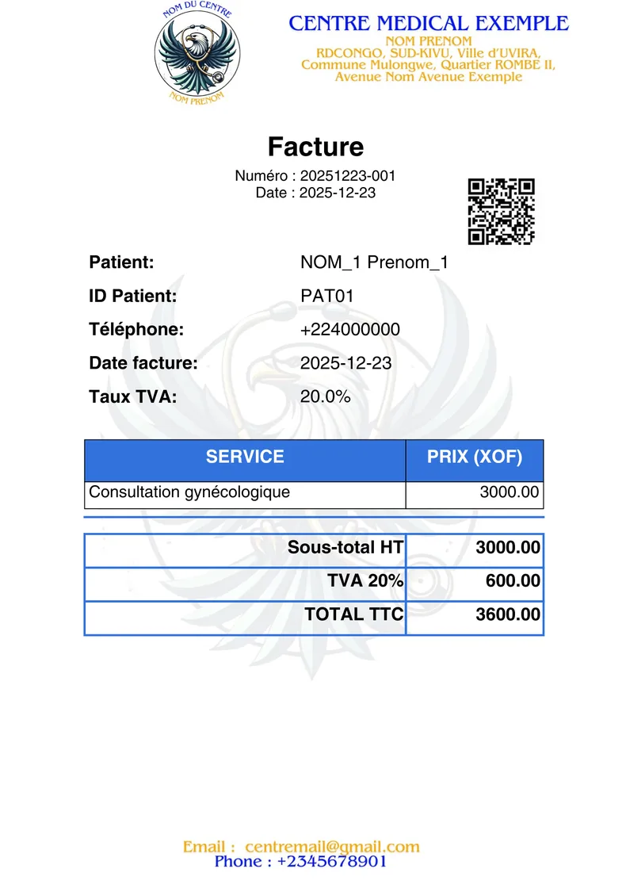

Tout votre établissement, en un regard
Un tableau de bord qui donne accès à vos outils selon vos besoins.
Un logiciel de gestion médicale qui réunit patients, consultations, rendez-vous, documents, facturation et pilotage — pensé pour les cabinets, cliniques et centres de santé.

Une plateforme commune pour retrouver les informations patients, organiser les soins et suivre l’activité de votre structure — sans multiplier les applications.
Des fonctions cliniques, administratives et financières accessibles depuis le même tableau de bord. Voici ce que vous pourrez découvrir dans l’application.
Un tableau de bord qui donne accès à vos outils selon vos besoins.
Établissement, horaires, impression PDF et modules adaptés à votre organisation.
Créez des comptes et ajustez les droits d’accès aux modules.
Retrouvez les dossiers, les actions disponibles et les badges patients.
Saisissez la consultation et préparez les prescriptions et documents PDF.
Constantes, dossier d’hospitalisation, consignes et suivi des équipes.
Actes, TVA, factures, paiements et prise en charge des tiers payants.
Biologie, radiologie, pharmacie et alertes de stock disponibles dans les modules.
Statistiques, recettes, dépenses, exports et journal d’audit interne.
De l’accueil à la gestion, chaque étape trouve sa place. Découvrez concrètement les écrans que votre équipe pourra utiliser.

Liste patients, identifiants, antécédents et accès aux actions utiles.

Signes cliniques, diagnostic, notes, prescription et suivi.

Factures, paiements et documents PDF, dans le même parcours.
Chaque aperçu a été revu pour afficher l’écran complet, sans casse ni recadrage agressif. Cliquez sur une capture pour l’ouvrir en grand format.
La prise en charge ne s’arrête pas à la consultation. Préparez des prescriptions et vos documents de facturation à partir de l’activité enregistrée.


Découvrez le principe de fonctionnement, la navigation et les principaux espaces du logiciel. La vidéo s'ouvre seulement lorsque vous décidez de la regarder.
Lecture sur YouTube avec protection renforcée de la confidentialité.
Un assistant pour vous orienter dans le logiciel et, selon la configuration, vous accompagner dans certaines tâches d’analyse. Vous gardez toujours la décision clinique.
Fonctionnalités dépendantes de la configuration et des services IA utilisés.
Que vous exerciez seul ou en équipe, adoptez les modules utiles et organisez les accès selon les responsabilités.
Gestion des patients, consultations, ordonnances, certificats et facturation dans un flux simple.
Hospitalisation, examens, comptabilité, administration et suivi d’équipe dans un même environnement.
Coordination entre accueil, soins, examens, documents et supervision administrative.
PC serveur, accès Android/Windows compatibles, salle d’attente et outils d’assistance intégrés.
Téléchargez directement EasyMedicaLink et explorez ses fonctionnalités. Choisissez la version adaptée à votre appareil.
Pour les ordinateurs Windows équipés d’un système 64 bits.
Télécharger Windows 64 bitsPour les PC utilisant une édition Windows 32 bits compatible.
Télécharger Windows 32 bitsPour smartphones et tablettes Android compatibles, selon la configuration du réseau.
Télécharger Android APKLes trois fichiers sont distribués depuis GitHub Releases. L’installation et le fonctionnement dépendent de la compatibilité de votre système, des prérequis et de la configuration du logiciel. Android peut nécessiter un PC serveur et le même réseau local.
Le logiciel propose un essai de 7 jours : découvrez vos modules, puis choisissez la formule qui correspond à votre établissement.
Téléchargez Windows 64 bits, Windows 32 bits ou Android selon votre appareil.
Repérez le tableau de bord, les paramètres, les patients, la facturation et les autres modules selon votre profil.
Testez consultation, documents PDF, paiements, statistiques, salle d’attente et assistance IA selon votre organisation.
Oui. Les images proviennent de captures du logiciel et d'exemples de documents. Certaines informations identifiantes ont été masquées pour la publication.
Le site montre notamment le tableau de bord, les paramètres, les comptes, les patients, la consultation, l’hospitalisation, la facturation, la biologie, la radiologie, la pharmacie, la comptabilité, les statistiques, la salle d’attente, l’audit et l’assistant IA.
La présentation met en avant la génération de documents médicaux et de facturation, ainsi que l’enregistrement des paiements et la production de PDF.
L’usage Android dépend de votre architecture. Le fonctionnement présenté repose généralement sur un PC serveur et le même réseau local.
Les captures montrent un module de comptes et d’autorisations permettant d’activer ou de limiter l’accès aux différents modules selon les rôles.
Écrivez à sastoukadigital@gmail.com ou contactez SASTOUKA DIGITAL en précisant votre version, votre appareil et le besoin rencontré.
Échangez directement avec SASTOUKA DIGITAL sur l’installation, le réseau local et la prise en main. Sans engagement.